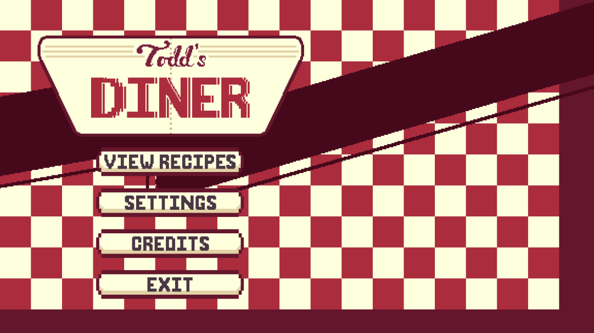
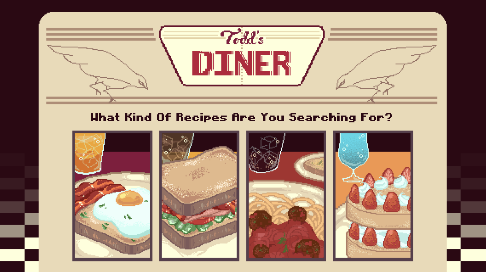
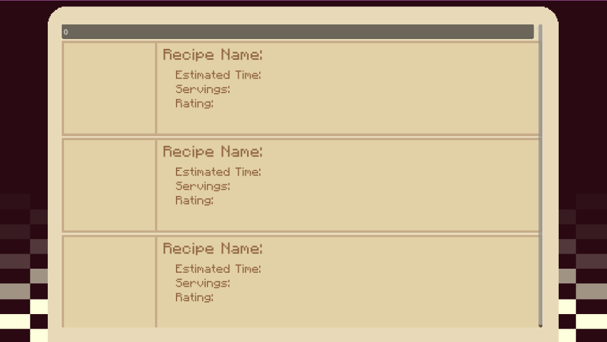

About
Todd's Diner is a work in progress interactive recipe application built using the Godot game engine inspired by DC characters. Users have the ability to read a variety of different recipes inspired by the DC characters while also having the ability to add additional recipes of their own. The program blends the interest of comics and practical cooking into a fun interactive experience.
Designs



Code
If you'd like to see the current code behind the application, visit the GitHub page by clicking the button below:
Github Page